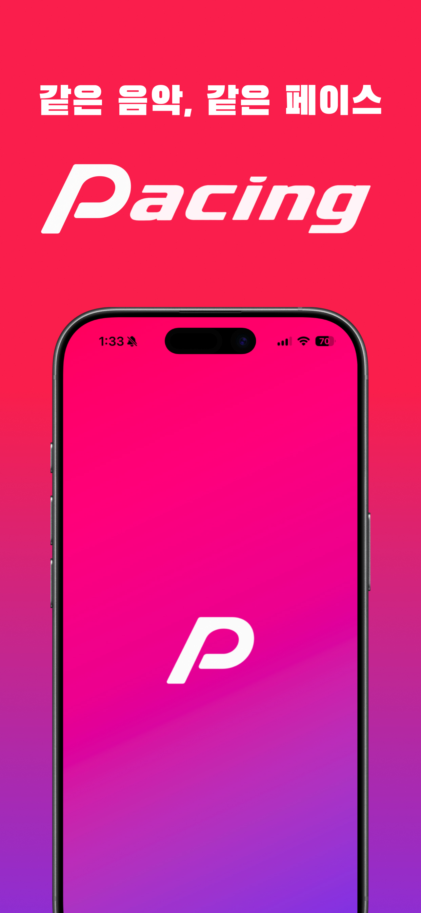
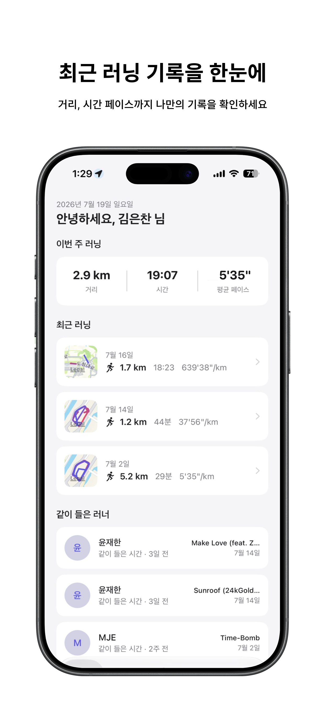
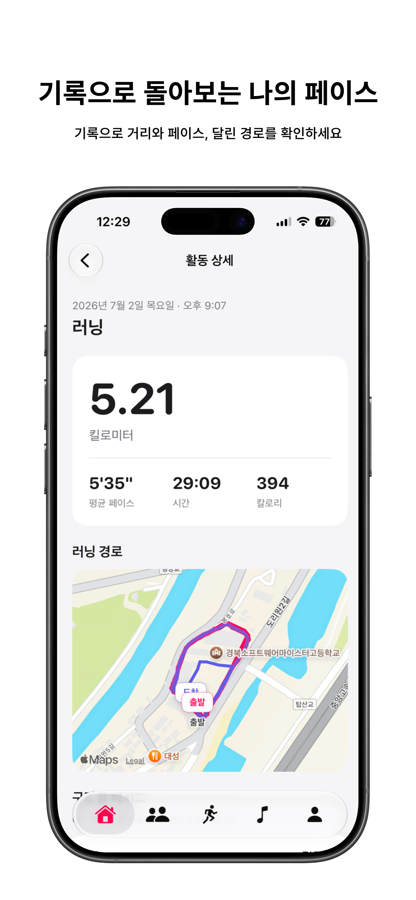
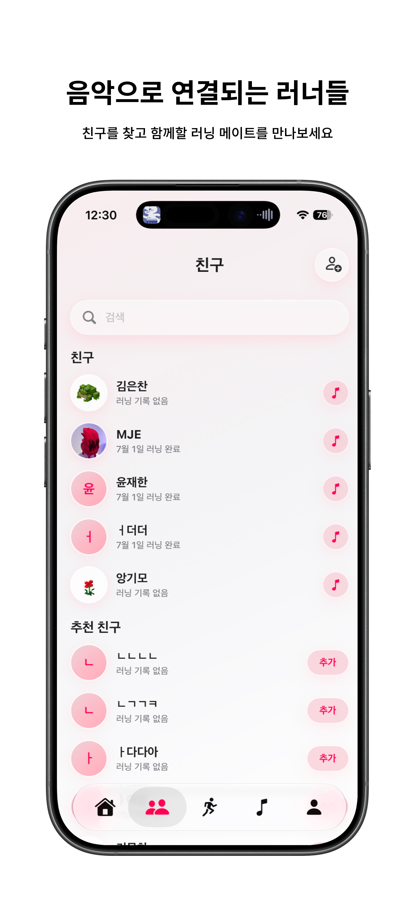
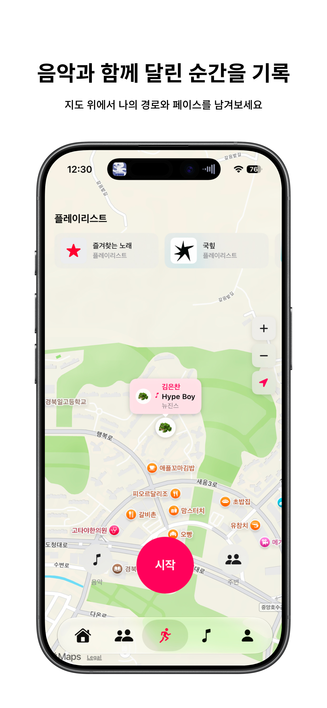
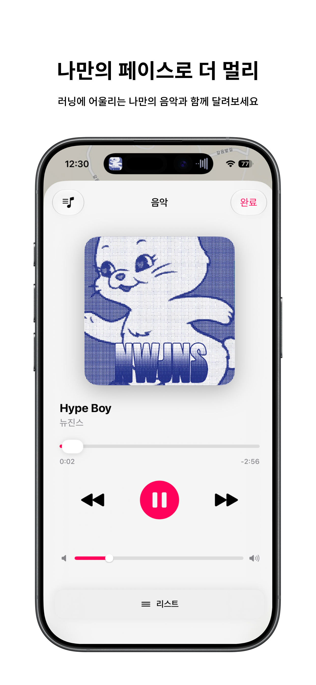
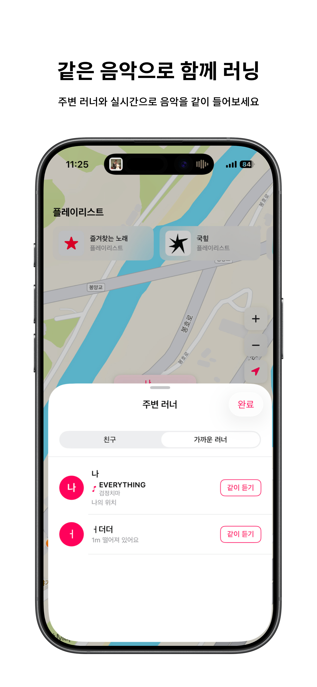
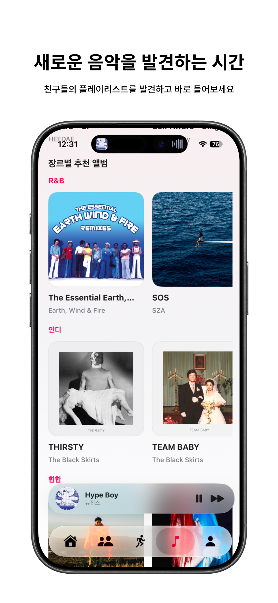
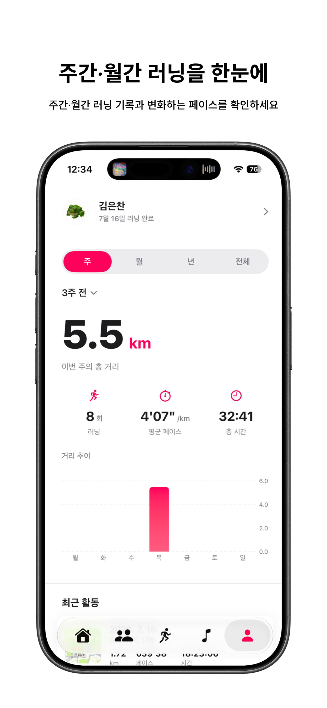

러닝 통계 계산 최적화
lazy 기반 단일 순회로 변경해 중간 배열 생성을 제거하고 거리·시간·유효 페이스를 한 번에 누적했습니다.
100,000개 기록 기준 83.6% 개선을 확인했습니다.
MY ROLE
TECH
REFACTORING
lazy 기반 단일 순회로 변경해 중간 배열 생성을 제거하고 거리·시간·유효 페이스를 한 번에 누적했습니다.
100,000개 기록 기준 83.6% 개선을 확인했습니다.
위도·경도 배열을 따로 복사하지 않고 좌표를 한 번만 순회해 최솟값과 최댓값을 직접 갱신했습니다.
불필요한 컬렉션 생성과 다중 순회를 제거했습니다.
PROBLEM SOLVING
1초 주기로 세션을 갱신하는 구조에서 재생 위치 보정과 곡 변경 이벤트가 구분되지 않아,
게스트 기기의 곡 전환이 지연되거나 재생 준비가 중복되는 문제가 있었습니다.
playbackEventID를 추가해 곡 변경 이벤트와 위치 보정 이벤트를 분리하고,
새 곡 이벤트가 발생하면 이전 비동기 재생 준비 작업의 결과를 무효화했습니다.
앱을 백그라운드로 전환하면 시간은 증가하지만 거리·페이스·칼로리·지도 경로가
갱신되지 않는 문제가 있었습니다.
location·audio 백그라운드 모드와 allowsBackgroundLocationUpdates를 적용하고,
위치 이벤트가 LocationManager에서 ViewModel을 거쳐 화면까지 전달되도록 흐름을 안정화했습니다.
(02) SCREENSHOTS
가로로 넘겨 보세요.








